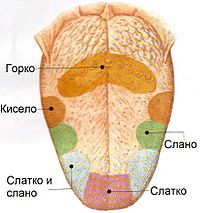
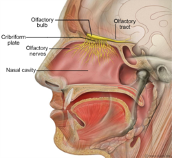
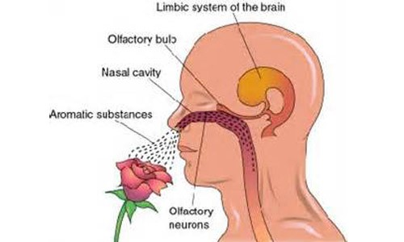

Čula ukusa i mirisa veoma su važna za opstanak. Ova čula nas upućuju na jestivu hranu, upozoravaju na materije koje su opasne, a utiču i na emocije i raspoloženje.
Ukus hrane ima značaja za varenje; kada uzimamo hranu koja nam prija, refleksno se pojačava lučenje sokova za varenje.
Receptori čula ukusa smješteni su u sluzokoži jezika; ima ih i na nepcu i u ždrijelu. Ove čulne ćelije grupisane su u kvržice različitog oblika, zbog kojih je površina jezika hrapava. Hrana se u ustima miješa sa pljuvačkom; rastvorene materije dovode do stvaranja nadražaja u receptorima za ukus. Osjećajnim nervnim vlaknom nadražaj se prenosi do centra čula ukusa u kori velikog mozga. U centru se nadražaj dešifruje, te imamo osjećaj ukusa.
Razlikujemo četiri osnovne vrste ukusa: slatko, slano, gorko i kisjelo. Za svaki od njih postoje posebni receptori, koji su grupisani u vidu zona na jeziku. Tako je vrh jezika naročito osjetljiv za slatko i slano, bočne strane za kisjelo, dok bazom jezika osjećamo gorko. Kombinacijom osnovnih vrsta ukusa formiraju se ostali osjećaji ukusa. Na određivanje ukusa utiču i druga čula, a posebno čulo mirisa.
Kako osjećamo ukuse
Čulo mirisa je mnogo osjetljivije od čula ukusa. Njime možemo da osjetimo 3000 različitih mirisa. Čulom mirisa ispitujemo kvalitet hrane, pića i vazduha. Prijatni mirisi izazivaju pozitivne emocije. Neprijatni mirisi nas upozoravaju na moguće opasnosti: pokvarena hrana neprijatno miriše, miris paljevine upozorava na blizinu požara...
Receptori čula mirisa nalaze se u gornjem dijelu nosne duplje, označenom kao mirisna zona. Postoji na stotine različitih vrsta mirisnih ćelija; svaka od njih osjetljiva je na posebnu hemijsku materiju. Čulne ćelije su duguljaste i na jednom kraju imaju treplje. Uronjene su u sluz koju izlučuje sluzokoža. Samo isparljive materije, koje sa vazduhom dospijevaju u nos, mogu nadražiti mirisne ćelije. Molekuli gasovitih materija rastvaraju se u sluzi, to draži cilije mirisnih ćelija, koje proizvode nadražaj. Nadražaj se prenosi mirisnim nervom do centra u kori velikog mozga. Tada nastaje osjećaj mirisa.
Receptori za miris brzo se "adaptiraju"; ako smo neko vrijeme izloženi djelovanju nekog mirisa, čulo prestaje da ga registruje. Otrovni gasovi i prejaki mirisi oštećuju čulo mirisa. Dugotrajne kijavice ili oštećenja sluzokože nosa uzrokuju sličan efekat.